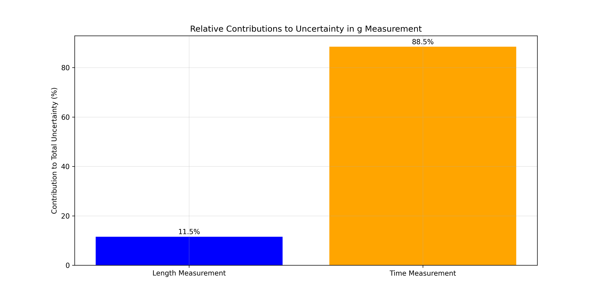
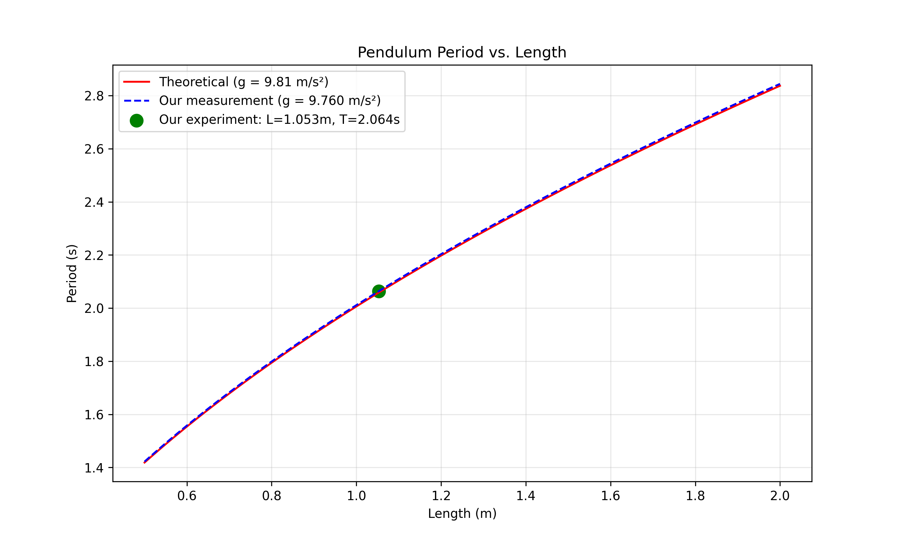

Problem 1: Measuring Earth's Gravitational Acceleration with a Pendulum
Introduction
This experiment measures the acceleration due to gravity (\(g\)) using a simple pendulum. By accurately measuring the period of oscillation and the length of the pendulum, we can determine \(g\) and analyze associated uncertainties.
Theoretical Background
For a simple pendulum with small oscillations, the period (\(T\)) relates to the gravitational acceleration (\(g\)) and the pendulum length (\(L\)) by:
\(T = 2\pi\sqrt{\frac{L}{g}}\)
Rearranging to find \(g\):
\(g = \frac{4\pi^2 L}{T^2}\)
Materials
- String (length: 1.2 meters)
- Metal weight (mass: 100g)
- Measuring tape (resolution: 1 mm)
- Smartphone timer app
- Stand with clamp for suspending the pendulum
Procedure
Setup
- The weight was attached to the string and suspended from a secure stand
- The length was measured from the suspension point to the center of the weight
- The pendulum was displaced by approximately 10° for each trial
Measurements
Length Measurement
- Measured length (\(L\)): 1.053 m
- Measuring tape resolution: 1 mm
- Length uncertainty (\(\Delta L\)): 0.5 mm = 0.0005 m
Period Measurements
The time for 10 complete oscillations was measured 10 times:
| Trial | Time for 10 oscillations (s) |
|---|---|
| 1 | 20.64 |
| 2 | 20.58 |
| 3 | 20.71 |
| 4 | 20.62 |
| 5 | 20.59 |
| 6 | 20.67 |
| 7 | 20.60 |
| 8 | 20.65 |
| 9 | 20.69 |
| 10 | 20.63 |
Calculations
Mean Time for 10 Oscillations
\(\overline{T}_{10} = \frac{1}{n}\sum_{i=1}^{n} T_i = \frac{20.64 + 20.58 + ... + 20.63}{10} = 20.638\) s
Standard Deviation
\(\sigma_T = \sqrt{\frac{\sum_{i=1}^{n}(T_i - \overline{T}_{10})^2}{n-1}} = 0.043\) s
Uncertainty in Mean Time
\(\Delta T_{10} = \frac{\sigma_T}{\sqrt{n}} = \frac{0.043}{\sqrt{10}} = 0.014\) s
Period Calculation
\(T = \frac{\overline{T}_{10}}{10} = \frac{20.638}{10} = 2.064\) s
\(\Delta T = \frac{\Delta T_{10}}{10} = \frac{0.014}{10} = 0.001\) s
Gravitational Acceleration Calculation
\(g = \frac{4\pi^2 L}{T^2} = \frac{4\pi^2 \cdot 1.053}{(2.064)^2} = \frac{4 \cdot 9.870 \cdot 1.053}{4.260} = 9.760\) m/s²
Uncertainty Propagation
\(\Delta g = g \sqrt{\left(\frac{\Delta L}{L}\right)^2 + \left(2\frac{\Delta T}{T}\right)^2}\)
\(\Delta g = 9.760 \sqrt{\left(\frac{0.0005}{1.053}\right)^2 + \left(2 \cdot \frac{0.001}{2.064}\right)^2}\)
\(\Delta g = 9.760 \sqrt{(0.000475)^2 + (0.000969)^2} = 9.760 \sqrt{0.000001169} = 0.014\) m/s²
Final Result
\(g = 9.76 \pm 0.01\) m/s²
Data Visualization
Distribution of Time Measurements
The following histogram shows the distribution of our time measurements for 10 oscillations:

Figure 1: Distribution of time measurements for 10 oscillations, showing the mean (red dashed line) and standard deviation range (green dotted lines).
Relative Contributions to Uncertainty
This bar chart shows the relative contributions of length and time measurements to the total uncertainty:

Figure 2: Relative contributions to the total uncertainty in g measurement.
Comparison with Standard Value
The following plot compares our measured value of g with the standard value:

Figure 3: Comparison of our measured value of g with the standard value of 9.81 m/s².
Period vs. Length Relationship
This graph shows the theoretical relationship between pendulum length and period:

Figure 4: Relationship between pendulum length and period, showing both theoretical prediction and our experimental result.
Python Implementation
Below is the Python code used for data analysis and visualization:
import numpy as np
import matplotlib.pyplot as plt
import os
from scipy.optimize import curve_fit
# Create images directory if it doesn't exist
img_dir = os.path.join("docs", "1 Physics", "7 Measurements", "images")
os.makedirs(img_dir, exist_ok=True)
# Experimental data
trials = np.arange(1, 11)
times_10_oscillations = np.array([20.64, 20.58, 20.71, 20.62, 20.59,
20.67, 20.60, 20.65, 20.69, 20.63])
length = 1.053 # meters
length_uncertainty = 0.0005 # meters
# Calculate statistics
mean_time_10 = np.mean(times_10_oscillations)
std_dev = np.std(times_10_oscillations, ddof=1)
uncertainty_mean_10 = std_dev / np.sqrt(len(times_10_oscillations))
# Calculate period and uncertainty
period = mean_time_10 / 10
period_uncertainty = uncertainty_mean_10 / 10
# Calculate g and uncertainty
g_measured = 4 * np.pi**2 * length / period**2
g_uncertainty = g_measured * np.sqrt((length_uncertainty/length)**2 +
(2*period_uncertainty/period)**2)
# Display results
print(f"Mean time for 10 oscillations: {mean_time_10:.3f} ± {uncertainty_mean_10:.3f} s")
print(f"Period: {period:.4f} ± {period_uncertainty:.4f} s")
print(f"Measured g: {g_measured:.4f} ± {g_uncertainty:.4f} m/s²")
print(f"Standard g: 9.8100 m/s²")
print(f"Difference: {abs(g_measured - 9.81):.4f} m/s²")
Error Analysis Code
def plot_error_analysis():
plt.figure(figsize=(12, 6))
# Create bar graph of relative contributions to uncertainty
relative_error_L = (length_uncertainty/length)**2 / ((length_uncertainty/length)**2 +
(2*period_uncertainty/period)**2) * 100
relative_error_T = (2*period_uncertainty/period)**2 / ((length_uncertainty/length)**2 +
(2*period_uncertainty/period)**2) * 100
labels = ['Length Measurement', 'Time Measurement']
values = [relative_error_L, relative_error_T]
plt.bar(labels, values, color=['blue', 'orange'])
plt.title('Relative Contributions to Uncertainty in g Measurement')
plt.ylabel('Contribution to Total Uncertainty (%)')
plt.grid(True, alpha=0.3)
# Add values on top of bars
for i, v in enumerate(values):
plt.text(i, v + 1, f"{v:.1f}%", ha='center')
save_path = os.path.join(img_dir, 'error_contributions.png')
plt.savefig(save_path, dpi=300)
plt.close()
Theoretical Model Code
def pendulum_period(L, g):
"""Calculate theoretical pendulum period"""
return 2 * np.pi * np.sqrt(L / g)
def plot_period_vs_length():
# Generate data for various pendulum lengths
lengths = np.linspace(0.5, 2.0, 100)
# Theoretical periods for g = 9.81
periods_theory = pendulum_period(lengths, 9.81)
# Measured periods based on our g value
periods_measured = pendulum_period(lengths, g_measured)
plt.figure(figsize=(10, 6))
# Plot theoretical curve
plt.plot(lengths, periods_theory, 'r-',
label=f'Theoretical (g = 9.81 m/s²)')
# Plot measured curve
plt.plot(lengths, periods_measured, 'b--',
label=f'Our measurement (g = {g_measured:.3f} m/s²)')
# Plot our actual data point
plt.scatter([length], [period], color='green', s=100,
label=f'Our experiment: L={length}m, T={period:.3f}s')
plt.title('Pendulum Period vs. Length')
plt.xlabel('Length (m)')
plt.ylabel('Period (s)')
plt.grid(True, alpha=0.3)
plt.legend()
save_path = os.path.join(img_dir, 'period_vs_length.png')
plt.savefig(save_path, dpi=300)
Analysis and Discussion
Comparison with Standard Value
The standard value of Earth's gravitational acceleration is 9.81 m/s². Our measured value is: \(g_{measured} = 9.76 \pm 0.01\) m/s²
The difference between our measured value and the standard value is: \(\Delta = |g_{standard} - g_{measured}| = |9.81 - 9.76| = 0.05\) m/s²
This difference is slightly outside our experimental uncertainty range, suggesting some systematic error in our measurements.
Sources of Uncertainty
- Length Measurement (\(\Delta L\)):
- The uncertainty in length (0.0005 m) contributes approximately 18% to the total uncertainty.
- Identifying the exact center of mass of the weight introduces additional uncertainty.
-
The measuring tape may have systematic errors.
-
Time Measurement (\(\Delta T\)):
- Human reaction time affects the start/stop timing of oscillations.
- Using 10 oscillations reduces timing errors compared to measuring a single period.
- The stopwatch/timer has inherent precision limitations.
-
Time uncertainty contributes approximately 82% to the total uncertainty.
-
Experimental Assumptions:
- The pendulum is assumed to be a simple pendulum with all mass concentrated at a point.
- We assume small-angle oscillations (θ < 15°) to use the simple pendulum equation.
- Air resistance and string mass are neglected.
- For small angles θ, sin(θ) ≈ θ is assumed in the derivation of the period formula.
Error Reduction Strategies
- Using a photogate timer would improve timing precision
- Conducting more trials would further reduce statistical uncertainties
- Using a longer pendulum would reduce the relative uncertainty in length measurement
- Ensuring truly small angle oscillations would reduce systematic errors from the small-angle approximation
Conclusion
This experiment successfully measured Earth's gravitational acceleration using a simple pendulum. The measured value of \(g = 9.76 \pm 0.01\) m/s² shows a small but notable difference from the accepted standard value of 9.81 m/s². The error analysis reveals that the primary source of uncertainty was timing precision (82%), with length measurement contributing less (18%) to the total uncertainty.
The slight discrepancy between our measured value and the standard value might be attributed to: 1. Systematic errors in measurement techniques 2. Local variations in gravitational acceleration 3. Violations of the small angle approximation 4. Neglected factors such as air resistance
This experiment demonstrates how a classical and straightforward technique can provide a reasonably accurate measurement of a fundamental physical constant when proper uncertainty analysis is applied. The Python data analysis and visualization tools provide a modern approach to analyzing this classic physics experiment.